|
|||
|
| • Mechanika » Kinematyka, Dynamika, Praca, moc, energia, Grawitacja, Ruch obrotowy, Statyka, Relatywistyka • Fizyka molekularna i ciepło » Termodynamika, Gazy, Ciecze, Ciała stałe • Elektryczność i magnetyzm » Elektrostatyka, Pole elektrostatyczne, Prąd elektryczny stały, Magnetyzm, Elektromagnetyzm • Zjawiska falowe » Ruch drgający i falowy, Akustyka, Drgania i fale elektromagnetyczne, Optyka • Elementy fizyki wpółczesnej » Dualizm korpuskularno-falowy, Fizyka atomowa, Fizyka jądrowa • Astronomia » Astronomia • Zagadnienia matematyczne » Wektory, Pochodna funkcji, Logarytmy • Tablice » Jednostki wielkości fizycznych, Właściwości fizyczne, Właściwości elektromagnetyczne i falowe, Stałe fizyczne, Tablice matematyczne • O stronie » Autorzy, Bibliografia | |
|
Ruch obrotowy jednostajny
Na co dzień każdy z nas spotyka się z ruchem obrotowym. W technice stosuje się często różnego rodzaju wały lub koła. W ruchu tym torem ruchu punktu jest okrąg, natomiast torem ruchu wszystkich punktów ciała poruszającego się ruchem obrotowym są okręgi współśrodkowe, przy czym środki tych okręgów leżą na jednej prostej, niebiorącej udziału w ruchu i zwanej osią obrotu. 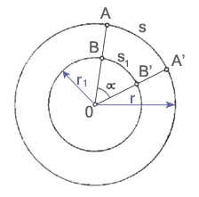 r, r1 - promienie wodzące s, s1 - drogi liniowe Na rysunku zostały przedstawione drogi przebyte przez punkty A i B w jednakowym czasie. Odpowiadający drogom liniowym kąt obrotu ciał jest równy dla wszystkich punktów biorących udział w ruchu i nosi nazwę drogi kątowej. Zgodnie z określeniem miary łukowej kąta
Do określanie ruchu obrotowego używa się wielkości zwanej prędkością kątową.
Jednostką prędkości kątowej jest radian na sekundę (rad/s).
W ruchu obrotowym jednostajnym prędkość kątowa jest równa: Każdy punkt ciała poruszającego się ruchem obrotowym jednostajnym ma również określoną prędkość liniową, która wynosi:
W opisie ruchu obrotowego jednostajnego używa się także częstotliwości i okresu obrotu. T - okres obrotu, czyli czas jednego całkowitego obrotu f - częstotliwość, czyli liczba pełnych obrotów wykonanych w czasie jednej sekundy Uwzględniając częstotliwość i okres obrotu, wzory na prędkość kątową i prędkość liniową przybierają postać: Ruch obrotowy jednostajnie zmienny
W ruchu obrotowym zmiennym prędkość kątowa nie jest wielkością stałą. Wyznaczyć można w tym ruchu średnią prędkość kątową (korzystając ze wzoru na prędkość kątową w ruchu obrotowym jednostajnym) oraz prędkość chwilową, która jest określana jako granica, do której dąży stosunek przyrostu drogi kątowej do przyrostu czasu, gdy przyrost ten dąży do zera: Najczęściej w czasie rozruchu i hamowania kół, spotykamy się z ruchem obrotowym jednostajnie zmiennym, w którym stosunek przyrostu prędkości kątowej do przyrostu czasu, w którym ten przyrost zachodzi, jest wielkością stałą i nosi nazwę przyspieszenia kątowego. Jednostką przyspieszenia kątowego jest rad/s2. Przyspieszenie kątowe jest wektorem i ma kierunek przyrostu prędkości kątowej. W ruchu tym istnieje również przyspieszenie liniowe, które jest równe: Podstawiając i , otrzymujemy zależność między przyspieszeniem liniowym a przyspieszeniem kątowym:
Równanie prędkości kątowej ruchu obrotowego jednostajnie zmiennego: Równanie drogi kątowej tego ruchu: Moment obrotowy
Na ruch obrotowy ciał ma wpływ nie tylko wielkość i kierunek działającej siły, ale również położenie jej linii działania. Rozważmy to na przykładzie krążka umieszczonego obrotowo na osi O. 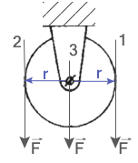 Jeżeli siła będzie działać wzdłuż linii:
Jak widzimy skutek działania siły na ciało zależy więc nie tylko od jej wielkości, ale również od położenia linii działania siły względem określonego punktu. W naszym przykładzie mówimy, że w przypadku pierwszym i drugim istnieje moment siły, a w przypadku trzecim nie występuje moment siły, więc krążek pozostaje nieruchomy.
Jednostką momentu siły w układzie SI jest niutonometr ( ). 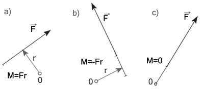 Moment siły względem punktu O jest wektorem prostopadłym do płaszczyzny, w której leży ten punkt i linia działania siły F. Ma on znak:
Praca i moc w ruchu obrotowym
Wprawienie ciała w ruch obrotowy związane jest z wykonaniem pracy. Również utrzymanie ciała w ruchu obrotowym jednostajnym, pokonując siły przeciwdziałające mu, wiąże się z wykonaniem pracy. Załóżmy, że na obwodzie tarczy obracającej się jednostajnie dookoła osi, dział stała siła F, pokonująca opory ruchu. 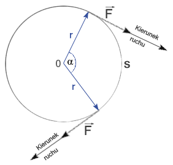 Po czasie t siła pokonała drogę liniową s. Wykonana praca przez tę siłę, wyraża się wzorem: Podstawiając do wzoru moment siły, otrzymujemy:
Moc wyraża się stosunkiem pracy do czasu, w którym ta praca została wykonana, a więc: W ruchu obrotowym jednostajnym
Energia kinetyczna w ruchu obrotowym. Moment bezwładności
Rozważmy energię kinetyczną ciała, znajdującego się w ruchu obrotowym jednostajnym. Zakładamy, że ciało to ma postać tarczy o masie m i składa się z bardzo dużej ilości elementów o masach m1,m2,...,mn, które są tak małe, że można je przyjąć za punkty materialne. Tarcza ta obraca się dookoła osi przechodzącej przez jej środek ciężkości ze stałą prędkością kątową. 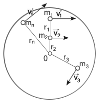 Energia pojedynczego elementu wynosi: a więc energia kinetyczna całej tarczy jest sumą energii kinetycznych poszczególnych elementów: Wyłączamy przed znak sumy stałą wartość : Wyrażenie nazywamy momentem bezwładności J ciała względem osi obrotu. Jednostką momentu bezwładności jest iloczyn jednostki masy i kwadratu jednostki długości ( ). Zatem energia kinetyczna ciała wynosi:
Momenty bezwładności ciał o określonych kształtach geometrycznych (liczone są one zazwyczaj za pomocą wzorów wyprowadzonych przy użyciu rachunku całkowego): 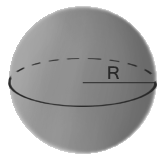 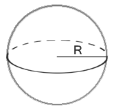 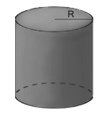 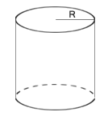 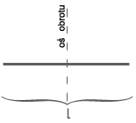 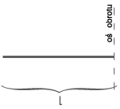 TWIERDZENIE STEINERA Wyraża on zależność między momentem bezwładności ciała względem danej osi, a jego momentem bezwładności względem osi przechodzącej przez środek masy i równoległej do poprzedniej. 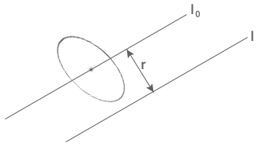 J - moment bezwładności względem dowolnej osi równoległej do osi przechodzącej przez środek masy - moment bezwładności względem osi przechodzącej przez środek masy m - całkowita masa ciał r - odległość między osiami Podstawowe równanie dynamiki ruchu obrotowego
Zgodnie z zasadą bezwładności tylko siła zewnętrzna może zmienić ruch ciała. Jeżeli natomiast działające siły równoważą się, to ciało pozostaje w spoczynku lub porusza się ruchem jednostajnym. Zasada ta obowiązuje również w ruchu obrotowym, ale trochę w zmienionej treści:
Rozważmy przypadek, gdy na punkt materialny o masie m związany z osią obrotu i mogący się wokół niej obracać po torze o promieniu r, działa stała siła F (co do wielkości), której moment M wynosi Fr. Pod wpływem tej siły, punkt materialny uzyska przyspieszenie a: Podstawiamy zamiast a wyrażenie : Uzyskaliśmy wzór na moment siły, działający na ten punkt materialny. Podobne rozważanie moglibyśmy przeprowadzić dla każdego elementu ciała obracającego się dookoła osi przechodzącej przez środek ciężkości, którego masa wynosi: A więc aby ciało uzyskało przyspieszenie kątowe , trzeba na nie działać momentem obrotowym M, równym sumie momentów obrotowych poruszających poszczególne elementy: Zatem uzyskaliśmy podstawowe równanie dynamiki ruchu obrotowego:
Porównując wzory dynamiki ruchu obrotowego i ruchu postępowego widzimy, iż moment bezwładności w ruchu obrotowym spełnia taką samą rolę jak masa w ruchu postępowym, natomiast moment siły odgrywa w ruchu obrotowym taką rolę jak siła w ruchu postępowym. Moment pędu. Prawo zachowania momentu pędu
Moment pędu odrywa w dynamice ruchu obrotowego tę samą rolę, co pęd w ruchu postępowym. Jest on równy iloczynowi pędu i promienia wodzącego, jeśli punkt materialny porusza się po okręgu: Jednostką momentu pędu jest .
Dla ciała o masie m obracającego się dookoła osi przechodzącej przez środek ciężkości, składającego się dużej ilości elementów, moment pędu wynosi:
Spróbujmy powiązać ze sobą zależnością moment obrotowy i moment pędu. Korzystamy z podstawowego równania ruchu obrotowego: ZASADA ZACHOWANIA MOMENTU PĘDU
Bryła sztywna
W ruchu postępowym każdy punkt bryły sztywnej ma taką samą prędkość liniową. W ruchu obrotowym im dalej od osi obrotu, tym większa prędkość liniowa, prędkość kątowa natomiast pozostaje bez zmian.
|
| Copyright © 2003- fizyka.kopernik.mielec.pl |